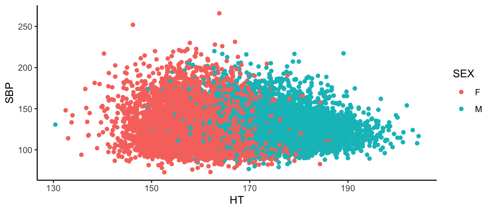
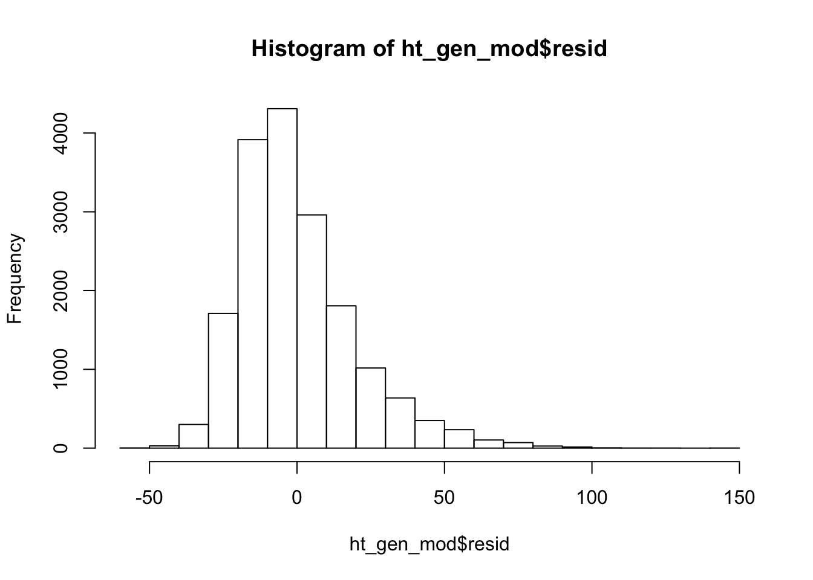
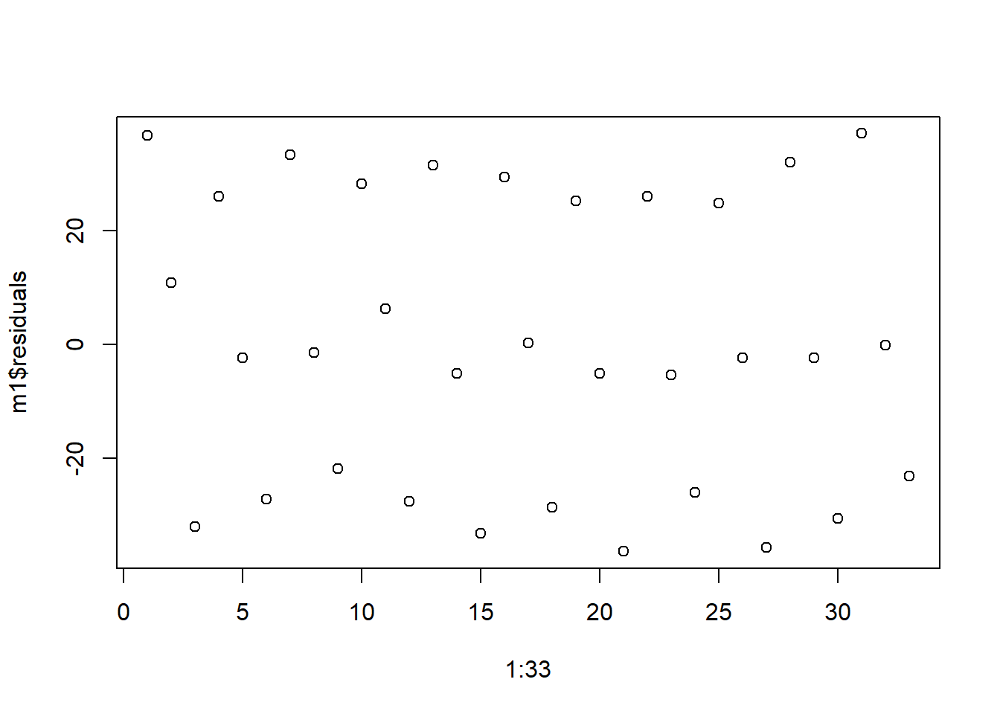
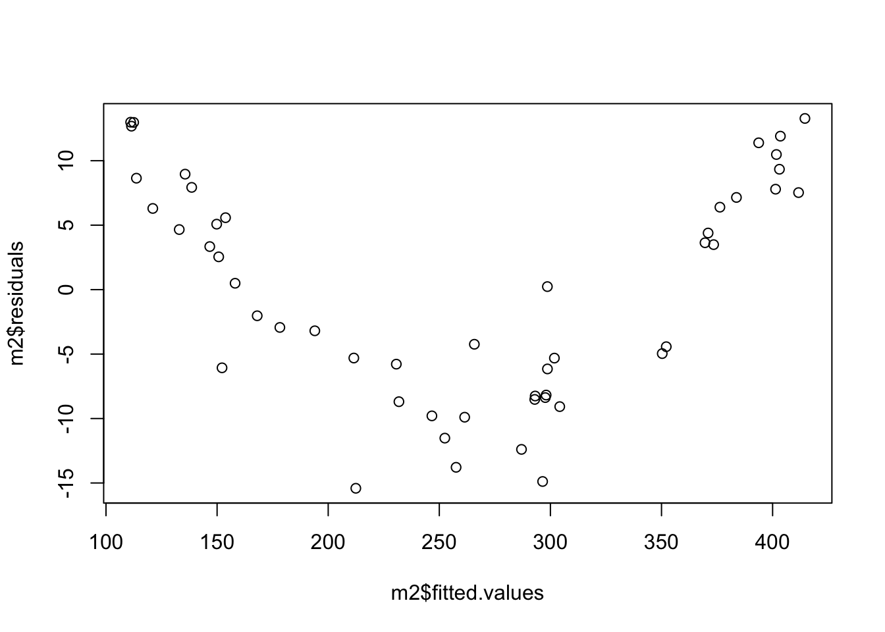
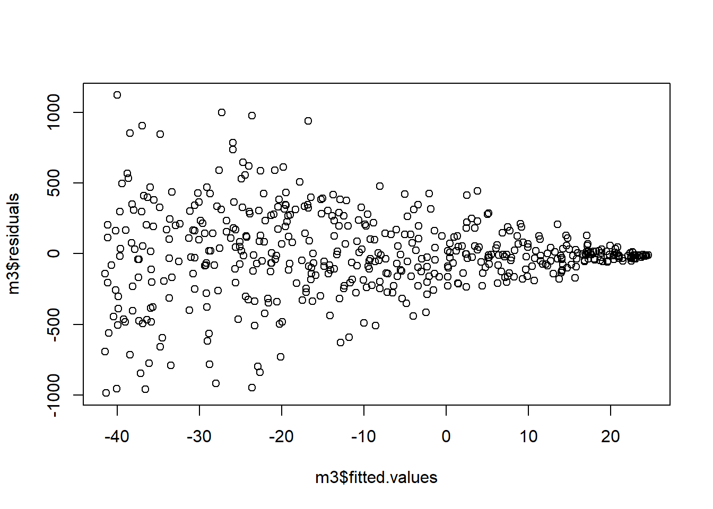
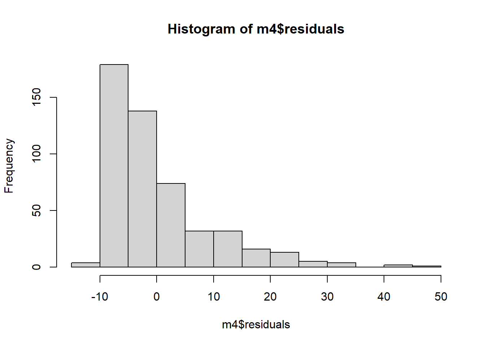

Chapter 3 Confounding adjustment with regression
Recall from Chapter 2 that confounding occurs when the treatment variable depends upon another variable that is itself a cause of the outcome. When researchers have not controlled for a confounding variable through study design, they employ statistical methods during analysis to adjust for confounding. One of the most common techniques is multiple regression.
3.1 Categorical confounding variable
Let’s say we have treatment variable (X) and response variable (Y) but the relationship between them is confounded by a third variable (C). For instance, suppose we want to investigate the relationship between ice cream sales and hospital admissions for heart attacks in the summer in NYC. In this example, our “treatment” is volume of ice cream sales on any given day in NYC and our response is number of hospital admissions that day for heart attacks. If we only look at those two variables, we might see a strong correlation; as ice cream sales increase, so do heart attacks. But it would be a mistake to infer that eating ice cream causes heart attacks from this analysis alone.
What does it mean for ice cream sales to cause heart attacks? How is that different from an association between ice cream sales and heart attacks? Ice cream sales cause heart attacks if high and low ice cream sales on the same days resulted in different heart attack rates. However, we only get to observe each day with one value of ice cream sales. Therefore, a third variable may be a common cause of both ice cream sales and heart attacks. In this case, we say there is an association between ice cream sales and heart attacks.
In our case, the third variable is temperature. People tend to buy more ice cream when it is hot; if there also tends to be more heart attacks when it is hot, temperature confounds the relationship between ice cream sales and hospital admissions for heart attack. Recall the confounding diagram from Chapter 2. If we extend it to this example, we have

Causal diagram for ice cream sales and heart attacks.
Notice that we believe that a change in temperature causes a change in both ice cream sales and heart attacks.
If we control for temperature, then we will no longer see an association between ice cream sales and heart attacks. One way to control for temperature is to restrict the analysis to only days in a very narrow temperature range. However, restricting your analysis in this way would result in a lot of lost information. Instead, we turn to statistical methods like regression.
3.1.1 Unadjusted effect of \(X\) on \(Y\)
There exists a belief that height is protective against high blood pressure; that is, taller people tend to have lower blood pressure. In this section, we investigate this belief using data gathered from 1999 to 2006 by the CDC’s National Health and Nutrition Examination Survey (NHANES), a (relatively) representative sample of the adult U.S. population. The data contains variables on 12,671 Americans age 18 and older who were not pregnant or taking high blood pressure medication. We are interested in estimating the effect of height (HT) on mean systolic blood pressure (SBP). We could model this with the following regression equation. \[\widehat{SBP}=\beta_0+\beta_1*HT\]
If we fit a regression model with height as the treatment variable and systolic blood pressure as the response, we get the following results:
bp_dat<-read_csv("./data/blood_pressure.csv")
ht_mod=lm(SBP~HT,
data = bp_dat)
summary(ht_mod)##
## Call:
## lm(formula = SBP ~ HT, data = bp_dat)
##
## Residuals:
## Min 1Q Median 3Q Max
## -52.876 -13.804 -3.703 9.922 141.605
##
## Coefficients:
## Estimate Std. Error t value Pr(>|t|)
## (Intercept) 141.22705 2.52887 55.846 < 2e-16 ***
## HT -0.10276 0.01504 -6.833 8.58e-12 ***
## ---
## Signif. codes: 0 '***' 0.001 '**' 0.01 '*' 0.05 '.' 0.1 ' ' 1
##
## Residual standard error: 20.09 on 17486 degrees of freedom
## Multiple R-squared: 0.002663, Adjusted R-squared: 0.002606
## F-statistic: 46.69 on 1 and 17486 DF, p-value: 8.575e-12Note the coefficient on height is actually positive, meaning that taller people actually tend to have higher blood pressure! In fact, we expect SBP to go up by about 0.05 mmHG for every cm in additional height. This makes sense when we look at the data. There is A LOT of data here, but we see a general increase in SBP as height increases.
bp_dat%>%
ggplot(aes(x=`HT`,
y=`SBP`))+
geom_point()+
theme_classic()
This is contrary to what we expected. So I guess previous research was wrong. Wait – not so fast. Biological sex is a potential confounder.
3.1.2 Effect of \(X\) on \(Y\) adjusting for \(C\)
Men tend to be taller than women (175 cm vs 162cm). Men also tend to have higher mean systolic blood pressure (122 vs 118 mmHG). Therefore, Sex is a possible confounder. Below is our data, colored by Sex.
bp_dat%>%
ggplot(aes(x=`HT`,
y=`SBP`))+
geom_point(aes(colour = SEX))+
theme_classic()
Here, we see SBP tends to decrease as height increases within men. Likewise, within women, we see the same. If we want to estimate the effect of height on blood pressure, we must first adjust for Sex. We do this using multiple regression. “Multiple” because we have multiple variables on the right hand side of the equation. (This could be multiple explanatory variables or, as we have here a single explanatory variable with one or more confounding variables.) Often we do this simply by adding the other variable to the regression equation. But how do we add a categorical variable to a mathematical equation. Suppose my regression model is
\[\widehat{SBP}=\beta_0+\beta_1*HT+\beta_2*SEX\]
What does it mean to multiply something by “male?” When we want to include categorical variables as explanatory variables in regression models, we often use indicator (also called ‘dummy’) variables. In this case, biological sex has two levels, male and female, and we need one indicator variable to represent Sex. We will let our indicator variable equal 1 if a subject was male and 0 if the subject was female. \(\beta_2\) is interpreted as the expected increase in SBP when a subject is male.
A possible multiple regression equation with SBP as our response, height as the treatment adjusting for Sex as a confounder is
\[\widehat{SBP}=\beta_0+\beta_1*HT+\beta_2*SEX\]
When we add Sex to the model, we get the following results.
ht_gen_mod=lm(SBP~HT+SEX,
data = bp_dat)
summary(ht_gen_mod)##
## Call:
## lm(formula = SBP ~ HT + SEX, data = bp_dat)
##
## Residuals:
## Min 1Q Median 3Q Max
## -53.085 -13.547 -3.851 9.538 144.487
##
## Coefficients:
## Estimate Std. Error t value Pr(>|t|)
## (Intercept) 183.54338 3.24339 56.59 <2e-16 ***
## HT -0.37869 0.02006 -18.87 <2e-16 ***
## SEXM 8.30226 0.40559 20.47 <2e-16 ***
## ---
## Signif. codes: 0 '***' 0.001 '**' 0.01 '*' 0.05 '.' 0.1 ' ' 1
##
## Residual standard error: 19.85 on 17485 degrees of freedom
## Multiple R-squared: 0.026, Adjusted R-squared: 0.02589
## F-statistic: 233.4 on 2 and 17485 DF, p-value: < 2.2e-16We see that the relationship between height and SBP is now negative. Specifically, for every extra centimeter of height, we expect SBP to go down by 0.24 mmHG. Sex confounds the relationship between height and blood pressure. We can also note that the coefficient for Sex is a little over 9, meaning that on average, men have a SBP 9 mmHG higher than women.
Hmm, what are we forgetting…? Model diagnostics!
3.1.3 Assessing model adequacy
We have just done a theory-based test but we have not assessed whether the validity conditions are met. The validity conditions for multiple regression are analogous to those for simple regression. 1. Independence; once I have accounted for everything in the model, the responses can be considered independent of each other. 2. The model is linear; when plotting the residuals vs predicted values, there does not appear to be a pattern. 3. The residuals have constant variance; when plotting the residuals vs predicted values, there is a constant width. 4. Normality; a histogram of the residuals is approximately normal.
In practice, it is difficult to check for independence in the data. Unless there is a specific pattern to the way the data was collected, violations of this assumption may not be evident in our residual plots. The best way to verify this assumption is to know how the data was collected. Is it reasonable to consider it a random sample? If, for instance, we had repeated measurements on the same people, this assumption may not be reasonable. One way to check is to plot the residuals in the order they appear in your data. But if the dependence is not related to the order the data was stored, issues may not be visible in this plot.
To check for linearity, we look at the residuals vs fitted values plot. Here we are looking for any pattern in the residuals. They should be scattered roughly evenly above and below the \(y=0\) line across the entire graph. (To check more rigorously in multiple regression we would actually check each explanatory variable individually using something called a partial residual plot or component plus residual plot. That is beyond the scope of this course.)
To check for constant variance, we again look at the residuals vs predicted values. We are checking to see if the variability in the residuals is approximately the same for different values of the response. A widening of our residuals as y_hat increases, for instance, would indicate this assumption is not met.
Finally, to check for normality, we look at a histogram of the residuals to see if it looks at least approximately normal.
For our blood pressure example, we only have one observation on each person and we have a pseudo-random sample of the U.S. (Details on the exact sampling plan can be found on the CDC’s NHANES website.) Additionally, if we plot the residuals vs their index (i.e. in the order they are in the data) we see no clear pattern to the residuals. It seems reasonable that our independence validity condition is met.
plot(1:length(ht_gen_mod$residuals),ht_gen_mod$residuals)
The following figure depicts the residuals vs fitted values from our model with both height and Sex. The residuals do not show a pattern and are scattered roughly equally above and below the \(y = 0\) line. It seems reasonable to believe that the linearity validity condition is met.
plot(ht_gen_mod$fitted,ht_gen_mod$residuals)
From this same plot, we see the variance of the residuals is relatively constant as our predicted SBP increases. The validity condition requiring equal variance seems reasonable.
The histogram of our residuals looks relatively normal although it does seem to have a heavy right tail. Our residuals may not be strictly normal. However, linear regression is “robust” to departures from normality. That means that slight, or even moderate, departures from normality generally do not pose a problem. Our residuals look “normal enough” that I feel comfortable concluding that our validity conditions are met.
hist(ht_gen_mod$resid)
What would we expect to see if the validity conditions were violated? Below are some examples of model diagnostic plots that indicate a departure from our validity conditions. We simulated the data used to create these plots so we know which conditions are not valid. These are also relatively extreme examples for illustrative purposes; in real data you often will not see patterns this obvious. Violations of our model’s validity conditions can be especially hard to detect when we have a small sample size.
First, we look at independence. The following plot of residuals in order show a clear pattern. The residuals seem to be in triplets; first we have a positive residual, then a residual around zero, then a negative residual. This pattern indicates that are model is missing an important factor, like time. Perhaps the data was a reading collected three times a day - morning, noon and night - and we expect the reading will differ based on time of day but we did not include that in the model. Departures from independence are rarely this easy to spot.

Next we look at the linearity assumption. Below we see a residuals vs fitted values plot that shows a clear pattern. Fitted values below about 150 or above about 350 tend to have positive residuals (i.e. be underestimated) whereas fitted values between 150 and 350 tend to have negative residuals (i.e. be overestimated). This is an indication that our linearity assumption is violated; the right hand side of the model is not correctly specified.

Next we investigate our assumption of constant variance. In the plot below, we see a clear fanning out of the residuals; as \(\hat{y}\) increases, the variance of the residuals decreases.

And finally, we investigate our normality assumption. In the plot below, we see that are residuals are heavily skewed to the right. The assumption of normality is violated.

In our example, researchers were specifically interested in the relationship between height and blood pressure so height was our treatment variable. Sex was related to both height and blood pressure so we need to include it in our model, but we are not particularly interested in the relationship between Sex and blood pressure from a clinical or scientific standpoint. So Sex was a confounding variable. Notice that we treat these variables the same from a statistical standpoint. It is possible to have multiple exposures or treatments, multiple confounders, or both. The distinction between the two is not a statistical one; it is a scientific one.
3.2 Quantitative explanatory variable with quantitative confounding variable
TO BE WRITTEN